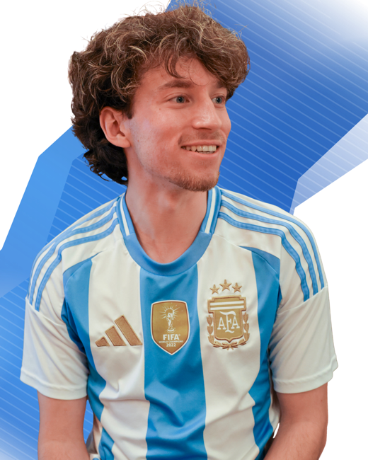

Host
Our podcast covers football matches around the world, reviews tactical breakdowns, and captures the cultures that surround the game.
Latest Episode
About Tiki-Taka Tiki-Talk
We are an international soccer podcast built on fan interaction, live streaming, and the chaos of the sport we all obsess over. From GOAT debates to Champions League drama, and from unboxing collectibles to live watch along parties, we cover the biggest moments in football with energy and personality. Smart takes, good vibes, and fútbol culture all in one place.
The Hosts
The people driving the debates, reactions, and culture around every Tiki-Taka Tiki-Talk episode.

Host

Host
Join Our Club
The club is built for listeners who want more than updates: exclusive content, members-first releases, and early access before the public drop.
Members Access
Club membership is the premium route into the show: bonus material, priority access, and a closer line to everything we publish around Tiki-Taka Tiki-Talk.